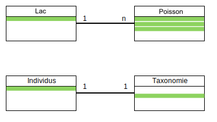

| inventaire_id | date | observateur | site | longitude | latitude | espece | nombre |
|---|---|---|---|---|---|---|---|
| 1 | 2023-06-01 | Observateur 1 | Site 1 | -61.07666 | 22.14963 | Espèce 1 | 1 |
| 1 | 2023-06-01 | Observateur 1 | Site 1 | -61.07666 | 22.14963 | Espèce 2 | 6 |
| 1 | 2023-06-01 | Observateur 1 | Site 1 | -61.07666 | 22.14963 | Espèce 3 | 8 |
| 1 | 2023-06-01 | Observateur 1 | Site 1 | -61.07666 | 22.14963 | Espèce 4 | 10 |
| 1 | 2023-06-01 | Observateur 1 | Site 1 | -61.07666 | 22.14963 | Espèce 5 | 5 |
| 1 | 2023-06-01 | Observateur 1 | Site 1 | -61.07666 | 22.14963 | Espèce 6 | 5 |
4 Bases de données
Parlons d’entreposage et d’archivage des données écologiques et des outils computationnels pour y arriver. Cette étape arrive après le plan d’échantillonnage, de façon à ce que les données récoltées et leur nature soient connues.
Bien des technologies sont disponibles pour l’entreposage des données allant du simple fichier texte (csv), des tableurs Excel, jusqu’aux infrastructures de bases de données relationnelles. Il est difficile de sauver les données écologiques dans un tableur sans répéter l’information à cause de leur complexité et de leur nature multidimensionnelle. Par exemple, les métadonnées de l’inventaire doivent être répétées à toutes les taxons observés, pour chaque site inventorié et pour toutes les répétitions de l’inventaire de façon à ce que plusieurs valeurs puissent être répétées inutilement des milliers, voir des millions de fois. Les répétitions peuvent réduire la performance de votre ordinateur en accroissant la mémoire nécessaire pour sauver et interagir avec des données.
Supposons que vous disposez d’un jeu de données écologiques contenant des informations sur les espèces observées lors d’inventaires dans différents sites. Les métadonnées de l’inventaire comprennent des informations telles que la date de l’inventaire, le nom de l’observateur, la localisation du site, etc.
Plutôt que de stocker ces données dans un seul tableau où les répétitions peuvent surcharger le fichier, vous pouvez utiliser plusieurs tableaux pour structurer les données de façon plus efficace :
Données assemblées en un seul tableau
Mémoire utilisée par l’approche avec un seul tableau
[1] "Mémoire utilisée : 535.422752380371 Mo"[1] "Taille du tableau : 10000000 lignes"Version optimisée en deux tableaux
Tableau de métadonnées
| inventaire_id | date | observateur | site | longitude | latitude |
|---|---|---|---|---|---|
| 1 | 2023-06-01 | Observateur 1 | Site 1 | -61.07666 | 22.14963 |
| 1 | 2023-06-01 | Observateur 1 | Site 1 | 131.71755 | -15.10691 |
| 1 | 2023-06-01 | Observateur 1 | Site 1 | 135.58669 | -68.40501 |
| 1 | 2023-06-01 | Observateur 1 | Site 1 | -57.98751 | -13.07035 |
| 1 | 2023-06-01 | Observateur 1 | Site 1 | 160.45071 | -42.66721 |
| 1 | 2023-06-01 | Observateur 1 | Site 1 | 34.60769 | -40.50805 |
Tableau des observations
| inventaire_id | espece | nombre |
|---|---|---|
| 1 | Espèce 1 | 1 |
| 1 | Espèce 2 | 6 |
| 1 | Espèce 3 | 8 |
| 1 | Espèce 4 | 10 |
| 1 | Espèce 5 | 5 |
| 1 | Espèce 6 | 5 |
Mémoire utilisée par l’approche avec deux tableaux
[1] "metadata_optimized : 43.3204727172852 Mo"[1] "observations_optimized : 15.2658386230469 Mo"[1] "Taille de tableau de métadonnées : 1000000 lignes"[1] "Taille de tableau des observations : 1000000 lignes"Comparaison de la différence de mémoire utilisée
[1] "En Mo : 476.836441040039 Mo"[1] "En lignes : 8000000 lines"[1] "En pourcentage : 89.0579339260668 %"4.1 Les bases de données relationnelles
Les bases de données redimensionnent le problème de multidimensionnalité des données (en plusieurs tables de n-2) en plus d’optimiser la mémoire requise. Voici quelques avantages de l’approche :
- Maintenir l’intégrité entre les enregistrements de nos tableaux. Une observation ne peut être faite sur un site qui n’existe pas.
- Normaliser et contrôler la qualité des données. Chaque colonne est un type précis de données. Des contraintes peuvent être appliquées sur chaque colonne.
- Éviter les redondances dans le stockage de l’information. Réduit aussi le risque d’erreurs lors de la saisie.
Chaque dimension d’un jeu de données est isolée dans une table d’une base de données. Les tables sont liées entre elles par des relations pour maintenir la structure des données.

Le format entité-relation
Le format entité-relation est une méthode de modélisation des bases de données relationnelles. Il repose sur le concept d’entités, qui représentent des objets concrets ou abstraits du monde réel, et sur les relations qui existent entre ces entités.
Dans ce format, une base de données relationnelle est constituée de tables, qui sont des entités. Chaque table représente une dimension spécifique du jeu de données, et chaque rangée de la table correspond à une occurrence spécifique de cette entité. Les attributs des entités sont représentés par les colonnes des tables, et chaque attribut contient une donnée spécifique.
Dans une base de données, chaque attribut/colonne est une donnée unique, c’est-à-dire qu’elle ne se répète pas ailleurs dans la base de données. La seule exception est les colonnes d’associations, les clés.
Le concept d’association et des clés primaires et secondaires
Les tables d’une base de données sont associées les unes aux autres par des relations pour faciliter la gestion et l’organisation des données. Ces relations peuvent être simples, comme une association “one to one” (1 -> 1), où une rangée d’une table est associée à une seule rangée d’une autre table. Par exemple, une table d’étudiants peut être associée à une table de coordonnées, où chaque étudiant a une seule adresse.
Les relations peuvent également être “one to many” (1 -> n), où une rangée d’une table est associée à plusieurs rangées d’une autre table. Par exemple, dans un système de gestion d’une entreprise, une table de départements peut être associée à une table d’employés, où chaque département peut avoir plusieurs employés.

Pour établir ces associations, les tables utilisent des clés primaires et des clés secondaires. Les clés primaires et secondaires jouent un rôle essentiel pour garantir l’intégrité et la cohérence des données. Une clé primaire est une colonne qui identifie de manière unique chaque rangée dans une table, elle agit comme un identifiant unique pour chaque occurrence de l’entité représentée par la table. En contrepartie, une clé secondaire est une colonne qui établit une relation avec une clé primaire d’une autre table.
Une clé primaire est essentielle pour assurer que chaque enregistrement soit unique dans la table, car elle ne peut jamais être NULL (c’est-à-dire qu’elle doit toujours contenir une valeur). Cela signifie qu’aucune autre rangée de la table ne peut avoir la même valeur pour sa clé primaire, garantissant ainsi l’unicité de chaque enregistrement.
Il est important de noter que la clé primaire peut être composée de plusieurs colonnes, formant ainsi une clé primaire composite. Cette combinaison de colonnes agit toujours comme un identifiant unique pour chaque enregistrement, même si aucune des colonnes individuelles n’était unique par elle-même. L’utilisation d’une clé primaire composite est utile lorsque nous avons besoin d’une clé plus complexe pour identifier de manière unique chaque enregistrement.
Outre les clés primaires, les bases de données relationnelles utilisent également des clés secondaires, également appelées clés étrangères. Une clé secondaire est une colonne (ou un ensemble de colonnes) d’une table qui établit une relation avec la clé primaire d’une autre table. En reliant les tables par des clés secondaires, nous créons des relations entre les entités représentées par ces tables.
Les clés secondaires permettent de relier les informations entre différentes tables et d’effectuer des requêtes pour obtenir des informations associées provenant de différentes parties de la base de données.

En somme, les clés primaires et secondaires sont des concepts fondamentaux dans les bases de données relationnelles. Les clés primaires garantissent l’unicité des enregistrements dans une table, tandis que les clés secondaires établissent des liens entre les tables, permettant une gestion efficace des données et des requêtes complexes pour obtenir des informations pertinentes.
Le type des attributs
Un type de données doit être assigné à chaque attribut. Voici les principaux types utilisés, pour tous les types de données voir la documentation SQLite3.
| Appelation | Type | Valeurs | Taille |
|---|---|---|---|
BOLEAN |
Boléen | vrai/faux | 1 octet |
INTEGER |
Entiers | -998, 123 | 1 à 4 octets |
DOUBLE, FLOAT, REAL |
Nombres réels | 9.98, -4.34 | 4 à 8 octets |
CHAR,VARCHAR |
Chaine de caractères | lapin | n x 1 à 8 octets |
TIMESTAMP,DATE,TIME |
Dates et heures | 1998-02-16 | 4 à 8 octets |
4.2 Les SGBD
Les bases de données sont des entrepôts de données qui sont uniquement manipulés par le système de gestion de base de données (SGBD). Les SGBD sont des logiciels intermédiaires entre l’utilisateur et la base de données, permettant d’exécuter des opérations sur la base de données, comme créer, interroger ou gérer, en cachant la complexité des manipulations des structures de la base de données. Alors qu’il existe plusieurs SGBD, ils opèrent tous à l’aide d’un langage de programmation, le Structured Query Language SQL.
Dans le cadre du cours, nous utiliserons le SGBD SQLite3.
SQLite3 s’inscrit dans une approche de fichier de base de données. C’est-à-dire, qu’on se connecte au fichier de la base de données à l’aide d’un logiciel client. L’avantage est que la base de données est sauvée localement sur votre machine dans un fichier, mais vient avec le désavantage qu’un seul utilisateur ne peut se connecter dessus à la fois.

En revanche, l’approche de serveur de base de données permet d’avoir plusieurs clients connectés sur un même serveur qui héberge la base de données. On peut donc être plusieurs à interagir en même temps avec. On pourrait envisager la situation suivante où plusieurs clients interagissent simultanément avec la base de données. Cependant, l’approche multi-utilisateur peut uniquement se faire si le serveur est distant.

Le principe client-serveur Le client est un logiciel installé sur votre ordinateur. C’est le SGBD. On se sert de ce logiciel pour interagir avec le serveur de base de données présent localement ou à distance. C’est sur ce principe qu’est bâti l’internet. Les clients sont vos logiciels navigateurs (Chrome, Firefox, etc) qui interagissent en envoyant des requêtes à des serveurs via une adresse URL. Le même principe sera utilisé pour interagir avec votre base de données, mais via une connexion à un fichier enregistré dans votre ordinateur.